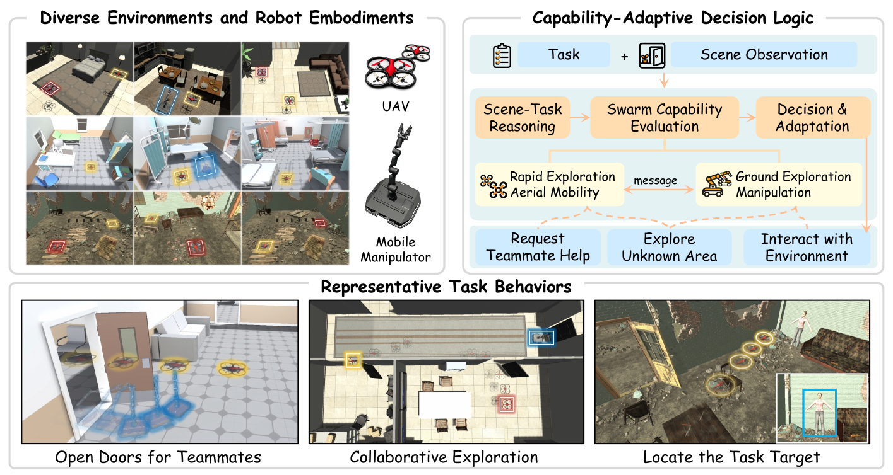
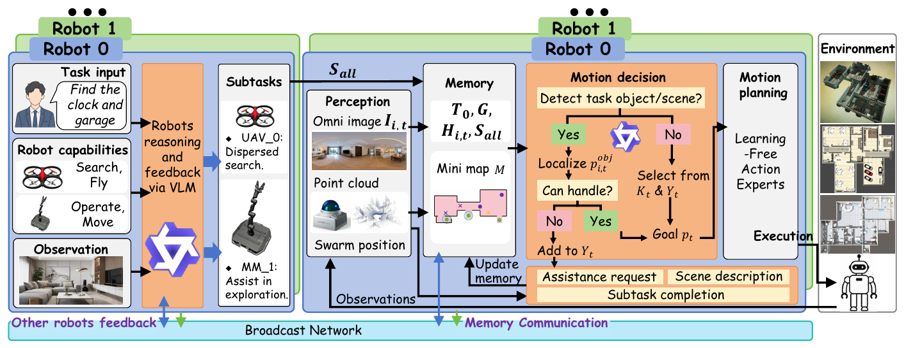
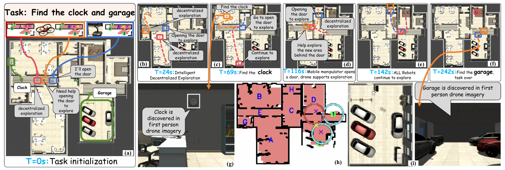

From heterogeneous task collaboration
to continuous system improvement.
Multi-robot systems can improve the efficiency of complex tasks through parallel execution and information sharing. Heterogeneous teams additionally combine complementary mobility, sensing, and manipulation capabilities to address tasks that a single platform cannot readily complete. This potential does not, however, automatically produce general collaboration. Many conventional systems are designed around specific objectives such as exploration, tracking, or mapping, with manually defined task models and separate decision programs for different robots. Changes in the task, environment, or team can therefore require substantial redesign.
This limitation becomes particularly relevant when tasks are specified in natural language. Human instructions typically describe desired outcomes without fully specifying action sequences, resource assignments, or execution conditions. Robots must interpret semantics and implicit constraints, decompose objectives into executable subtasks, and allocate work according to their own and their teammates' capabilities. Large language models provide language understanding, task reasoning, and knowledge transfer; vision-language models additionally connect this reasoning to images, object relationships, and spatial observations, providing a basis for embodied collaboration in unknown environments.
Model-level understanding and reasoning do not by themselves establish efficient, reliable multi-robot execution. Existing model-driven approaches often rely on centralized decisions, synchronized collaboration, or known maps, and frequently treat navigation and manipulation separately. Heterogeneous collaboration in unknown environments must address four connected requirements: capability-aware task decomposition and assignment, effective information exchange within bounded context, cooperation and conflict resolution among concurrent tasks, and translation of unified decisions into robot-specific executable actions. [D-VLC]
D-VLC addresses these requirements through decentralized, asynchronous perception–reasoning–action loops. Shared task decomposition and capability-conditioned reasoning establish collaborative objectives. Individual robots maintain compact spatial memory and exchange scene descriptions, task progress, and assistance requests on demand. A unified action-decision interface connects these decisions to execution modules suited to each embodiment. The central advance is to place general-purpose vision-language models within closed-loop collaboration in unknown environments without task-specific training. These mechanisms form the foundation of the present work.
From runtime collaboration to system improvement
D-VLC primarily addresses how robots can use general-purpose models to complete tasks collaboratively. The next question concerns the framework itself: how should the system producing those behaviors improve as tasks become longer, robot capabilities more diverse, and execution constraints more tightly coupled? A stronger reasoning model changes only part of this system. Task representation, shared state, allocation objectives, perception triggers, and recovery logic jointly determine its behavior. Locally correct reasoning may still fail to improve mission efficiency because of execution queues, occupied resources, or additional travel.
In a development workflow whose transitions are primarily handled by researchers, a collaboration failure leads to log inspection, diagnosis, implementation changes, test construction, result comparison, and further revision. Long-horizon multi-robot tasks make the relationships between these steps more complex. A carrying-related wait may result from receiver readiness rather than path planning; additional concurrency may introduce detours or spatial interference; a revision that succeeds in a component test may create a new blockage in a complete mission. System improvement therefore requires connecting code, execution state, and experimental evidence rather than judging an isolated model response or successful recording.
Joint iteration of the system and research workflow
Complex tasks expose problems across perception, task representation, allocation, navigation, and failure recovery. Replacing the reasoning model alone is insufficient to improve the system. The GPT-6 Astra coding agent therefore participates in code inspection, log analysis, test construction, implementation revision, and evidence organization, turning observed behavior into testable engineering hypotheses. Researchers continue to define objectives, provide observations, constrain changes, and assess the evidence.
This report distinguishes two loops. In the execution loop, GPT performs task decomposition, correction, and concurrency review. In the research loop, GPT-6 Astra uses experimental records to revise the software used in subsequent runs. The latter borrows the feedback structure of recursive self-improvement, but the objects being improved are the robotics system and its evaluation tools, not GPT's model weights. The next section traces this development through problems, revisions, and validation outcomes.
Using one experiment to revise
the next system and evaluation
This section documents development through concrete records. Each iteration combines three artifacts: the system implementation, evaluation procedures, and experimental evidence. GPT-6 Astra inspects code and execution records, proposes revisions, and constructs checks. Results determine which code is retained and may also change the scenarios and completion criteria evaluated next. The recursive relationship is therefore operational: evidence from one run changes the next software and test configuration.
2.1 Iteration state and feedback
Let Ck denote implementation, Tk test scenarios and criteria, and Ek execution evidence at iteration k. Given researcher-defined goals and constraints, GPT-6 Astra uses these artifacts to propose implementation and evaluation changes. Testing the candidate generates new evidence for retention, narrowing, or reversion.
Here, C includes task representation, allocation, and execution logic; T includes unit checks, restored checkpoints, and mission completion criteria; and E includes outcomes, elapsed time, failures, and recordings. GPT's weights remain unchanged. Runtime task reasoning and development-time software revision are separate roles and should not be treated as the same experimental factor.
2.2 A continuous sequence: proposing and narrowing predictive preparation
This sequence began with observed repeated travel and waiting: a robot already near a resource needed later could retrieve it before leaving, while an idle robot might move toward its next operation. The resulting candidate combined nearby pickup, release reordering, and physical prepositioning. The table traces how feedback changed implementation and evaluation scope. Stage identifiers organize this report rather than denote formal software releases.
| Stage and input | Implementation or evaluation work involving GPT-6 Astra | New evidence | Effect on the next iteration |
|---|---|---|---|
| R0: repeated travel and carrying-related waits | Implement predictive preparation in predictive_prepare.py; construct checks for cancellation receipts, occupied grippers, and receiver conditions. | Archived component tests cover constraints such as preserving receiver requirements and waiting for cancellation confirmation before replacement dispatch. | Turn a behavioral proposal into an executable candidate requiring an execution-time comparison. |
| R1: component checks passed | Restore the same known map, objects, and prior progress; compare baseline and candidate remaining-task execution. | Both complete: 422.113 → 352.058 s, a 70.056 s reduction (16.6%). Only the predictive-preparation module differs among 185 recorded source files. | Support further evaluation without assuming every preparation behavior helps; extend evaluation to idle prepositioning. |
| R2: local preparation criteria are insufficient | Examine downstream loading after installation and power connection; relate the waiting location to a teammate's reserved departure route. | Installation and connection criteria can be completed, but the loading checkpoint exceeds 228 s versus approximately 107 s for the baseline. A waiting point conflicts with the teammate's route. | Revise the hypothesis: moving earlier does not necessarily reduce total time. Narrow the behavior and inspect downstream interference. |
| R3: interference feedback drives code revision | Remove idle physical prepositioning; retain asynchronous model-selected nearby pickup and direct-release reordering. Perform regression checks and a complete mission. | 402 archived regression and depth-related checks pass. The revised full mission completes in 896.095 s, with zero new predictive-pickup events. | Establish completion for this integrated run. An experiment that actually triggers the retained behavior remains necessary to isolate its benefit. |
The sequence changes both the system and its evaluation. On the implementation side, pickup plus prepositioning becomes constrained pickup and release reordering. On the evaluation side, a local completion criterion expands to whether downstream loading remains possible. Interference exposed by that evaluation then motivates code reversion. Experimental results become inputs to further development rather than only performance statistics collected after implementation.
The 16.6% improvement applies to the original tested candidate, which included a subsequently removed behavior; it cannot be attributed entirely to the retained code. The 896.095 s full run likewise does not demonstrate a predictive-pickup speedup because the new event never triggered. These limits are part of the retention decision. Comparison results, test records, and revision provenance.
2.3 Applying the same acceptance criterion to an independent candidate
A reference-image experiment tests the same process on a different component. The hypothesis was that additional appearance information could improve recognition. Evaluation used 24 archived images, 192 pipeline replays, and five deterministic checks. Both conditions achieved 30/30 final positive identities, while positive-frame latency increased from 0.610 to 0.646 s and initial false positives rose from 0/18 to 4/18. The candidate was not merged. This is an independent rejected branch, not a subsequent version of predictive preparation.
2.4 Relationship between D-VLC and the current implementation
D-VLC provides the foundation of capability-aware reasoning, compact spatial information exchange, and asynchronous cooperation. The current implementation extends these ideas to four robot types and a two-floor operation chain, with explicit dependencies, resource occupancy, local task repair, and demand-driven perception. Its shared coordinator and asynchronous executors differ from D-VLC's robot-local decision structure. The current architecture follows in the next section; original D-VLC figures are retained with the source materials.
The further change examined here is GPT-6 Astra's participation in improving these implementations and their evaluation tools. Researchers retain responsibility for questions, objectives, constraints, and evidence assessment. The records document that feedback process and local results, but do not quantify researcher-hour savings or establish an overall performance gain over D-VLC.
Task programs and asynchronous execution
The system repeatedly connects four activities: observe the situation, build a task list, assign work that is ready to execute, and check what happened. GPT mainly helps write and revise the list. Other software handles camera processing, navigation, and physical actions.
Perception and state estimationCamera images, LiDAR, and depth measurements provide object identity, spatial location, and environmental state for subsequent decisions.
Task reasoning and allocationThe overall objective becomes a set of dependent subtasks, assigned according to robot capabilities and current state and revised using feedback.
Action execution and feedbackNavigation, grasping, placement, and device interaction implement subtasks and return success, failure, and state changes to the decision layer.
The reported system operates in Unity simulation. Closed-loop execution updates decisions using observed outcomes rather than relying only on a previously generated action sequence.
This is a simplified outline, not every low-level action. Fetching a key or module may happen early. Whether power connection and loading can overlap depends on device state and available robots.
Propose a structured plan or a sparse patch.
Check the patch against task history, ownership, and conditions.
Account for travel, resources, readiness, and current commitments.
1. Task reasoning and action selection
The task model decides that loading must follow repair. The action model selects an immediate skill or target. The executor moves the robot and performs the interaction. A GPT response is therefore not a direct motor command; the recent experiments retain Qwen3.5-4B for action selection.
2. Structured-plan validation
A model can omit a condition or try to rewrite completed work. A software validator checks the proposed changes against task state; an allocator then assigns the work. Validation is a programmed check, not another robot voting on the answer. It catches some errors, but overly strict checks can also cause retries.
3. Execution feedback and state updates
An “execution receipt” is the returned outcome: for example, R1 picked up the repair key, or placement failed because repair is incomplete. It updates object location, gripper occupancy, and progress. A model claiming success is insufficient without execution evidence.
4. Local task revision
If loading failed because repair was unfinished, add the missing dependency while preserving the retrieved key and completed repair steps. This is local correction. Broader replanning is reserved for problems that cannot be resolved by a small change.
Costs and constraints of concurrent allocation
Consider an illustration, not an experimental result. Two independent jobs take 20 and 30 seconds. Two robots working simultaneously might finish in about 30 seconds rather than 50. But if the second robot needs another 40 seconds to arrive, that assignment may be slower. The relevant objective is when the last required step finishes, not how many robots are moving now.
Stillness is also ambiguous. Maintaining authorization may require a robot to stay at the console. Unnecessarily waiting with a carried object may instead justify putting it down, changing assignments, or reordering work. A concurrency review searches for such opportunities, but can also conclude that keeping the plan is better.
GPT reasons about the task. It decomposes the mission, interprets failures, and reviews possible changes in concurrent work. The executor translates those decisions into navigation, pickup, placement, and interaction skills. This report features GPT-6 Astra; historical runtime configurations are identified separately with each experiment.
Concurrency is conditional. If the humanoid is already beside a key, sending a distant teammate to finish the same sequence may increase travel. If a robot holds authorization, it is occupied even while stationary. A useful allocator must preserve these commitments and optimize the remaining mission, not the number of moving robots.
Discovery ends when its job is done. Confirmed required objects are removed from search demand. Routine recognition can stop while task reasoning and execution continue. A newly fabricated object or an uncertain delivery location can still require a local check. The current visual pipeline uses printed-label verification, OCR and segmentation; it is not an evaluation of arbitrary, label-free object recognition.
The implementation uses asynchronous robot executors with a shared coordinator and task program. It should not be described as an entirely decentralized scheduler. A background review can also decide to leave the current plan unchanged.
Visual identity verification and spatial localization
Recognition first proposes a possible object; identity checks decide whether it is the required one. The current objects carry printed labels. OCR means reading image text; segmentation separates the target's image region. Distance measurements then provide a position, using LiDAR points on the target first and a limited-range depth camera when those points are insufficient.
The confirmed identity and location enter shared spatial memory for teammates to use. Once all required objects are known, repeated routine scanning is unnecessary. Machining can still create a previously nonexistent product, so a targeted local recognition step remains useful. The highlights show both situations.
Annotated local views of key events
Crops from archived recordings isolate top-down maps, individual robots, and simultaneous operations. Each selection opens an annotated event still and can switch to its continuous 3× video excerpt. Labels identify the robot, view, and logged event time; complete windows remain available in the archive.

Following successful pickup, R3 carries the workpiece to the delivery station and completes placement at 656.155 s. The map and third-person camera show transport within the ground floor.
R3 third-person view and ground-floor map
- R3 picks up the finished key
- R3 completes delivery
Collaboration events from other-model runs (original labels)
Stills and clips use cropping, resizing, and editorial labels only; no detection boxes or generated actions are added. The image clock is approximate; precise event times come from logs. Camera views may switch during recognition. Ten seconds of 3× playback represent approximately thirty mission seconds. Observation protocols are identified separately. Crop provenance and timestamps ↓
Archived experiments and initial conditions
To interpret the different speeds, first ask what the system already knows. In “simulator-semantic” trials, the simulator reports a visible object's identity and position directly; robots still explore and act, but skip online image recognition. A “full visual pipeline” must recognize and locate targets from images. A “restored checkpoint” starts partway through the mission with earlier knowledge and progress already available.
These English editions use existing camera recordings and synchronized status logs. The simulator and models were not rerun for this article. Cropping and English telemetry replace the original interface; the robot footage is unchanged apart from resizing and the labeled 3× playback.
Historical recordings with other models
An archived successful run actually using GPT-6 Astra. It begins without known objects or completed operations and uses visibility-gated simulator semantics. One of the four historical trials did not complete.
Download English video ↓Complete cooperation-window recordings
Five original swarm_cooperation_window recordings, preserving the shared map, task status, four camera views, and Chinese interface. All are the archived 3× editions, byte-identical to the source files; use fullscreen or download for a closer view.
GPT-5.6 historical originals (recorded configuration)
Selected successful historical run with simulator semantics; the four-run set also includes one incomplete trial.
Download the original recording ↓These recordings retain long waits, failures, and recovery around the selected moments. The original panel's manually expected task relationships are a display aid; read them separately from the model-generated task list and environment-confirmed progress below. A fluent short operation does not imply a flawless full run. Use the recordings alongside the statistics.
GPT-6 Astra execution records and evidence scope
This section reports four historical runs actually configured with GPT-6 Astra. They use visibility-gated simulator semantics: object identity and position are supplied when visible. Robots still explore, navigate, and execute tasks, but online RGB recognition is not included. Action selection and exploration use Qwen3.5-4B.
| Run | Reasoning effort | Outcome | Elapsed time | Corrections |
|---|---|---|---|---|
| low_1 | low | Completed | 797.704 s | 1 |
| low_2 | low | Completed | 816.561 s | 3 |
| medium_1 | medium | Incomplete; manually stopped | Stopped at 1,517.041 s | 10 |
| medium_2 | medium | Completed | 738.165 s | 0 |
Three of these four runs completed. The featured medium_2 recording is one successful run, with 122 skill attempts and 28 task-operation attempts. Its video does not replace the complete set or establish a general speed advantage over other models. The coding agent's system revisions and a particular runtime model's behavior constitute different kinds of evidence.
Existing comparisons involving other models remain in the historical records below. Their model names, timings, and observation conditions retain their original labels and are not presented as GPT-6 Astra measurements.
Historical model comparison: original configurations and measurements
This comparison concerns two complete visual missions starting in an unknown environment. The task-decomposition and correction model changes; action, recognition, and exploration models stay the same. Evaluation includes mission completion time and execution failures, with model-service latency reported separately.
In one complete matched-setup pair, replacing the Qwen task model with GPT-5.6 low reduced total mission time from 1,255.4 to 993.6 seconds. GPT had longer individual calls but fewer task-model requests, fewer failed operations, and less travel. The full result includes service delays and recovery.
Expressed in minutes, the Qwen run took about 20 min 55 s and the GPT run about 16 min 34 s, a difference of roughly 4 min 22 s. Light bars measure time until all required objects are found; dark bars measure the remaining mission. Some operations already happen during discovery, so these are not pure perception time versus pure manipulation time.
| Metric | Qwen3.8 Flash Next FP8 | GPT-5.6 low |
|---|---|---|
| Mission completed | Yes | Yes |
| Total skill attempts¹ | 126 | 117 |
| Task-operation attempts | 31 | 24 |
| Successful / failed / cancelled operations | 25 / 6 / 0 | 21 / 2 / 1 |
| Feedback-correction rounds | 7 | 4 |
| Concurrency reviews / adopted revisions | 8 / 0 | 4 / 0 |
| Task-model requests | 26 | 14 |
| Mean task-model request latency | 13.82 s | 26.44 s |
| First task plan published | 66.44 s | 102.80 s |
| Sampled total robot travel | 1,287.85 m | 1,022.57 m |
| Stationary intervals longer than 4 s² | 125 | 95 |
| HTTP 429 service errors | 3 | 0 |
Metric definitions and counting conventions
A skill attempt is a high-level navigation, exploration, pickup, or interaction attempt—not a motor step. Task operations directly advance repair, production, delivery, and related work. A failure is an unsuccessful execution; a cancellation may instead be an intentional response to a revised plan.
Correction rounds revise the task plan after a problem. Concurrency reviews look for a better arrangement but need not change anything. HTTP 429 indicates service rate limiting: it affects elapsed time, but does not by itself indicate a reasoning mistake.
A model request and a whole mission use different clocks. Other robots may keep moving during reasoning, and some requests overlap. Adding individual latencies therefore does not reproduce mission duration. The overall measure is actual elapsed time until every required outcome is confirmed.
¹ Includes exploration, failures, and cancellations; these are executor skill attempts, not motor steps. ² Stationary time may include observation, manipulation, and required sustained interaction. It is not equivalent to wasted time.
Correction events and infrastructure delays
Qwen: premature authorization, connecting power before repair completion, and loading before the required device state; three additional failures involved unavailable near-object operation poses. Three rate-limit errors also occurred.
GPT: a route blocked during material placement and an unconfirmed delivery-location recheck. A superseded disconnection action was cancelled and is counted separately from the two actual failures.
Some long corrections were infrastructure effects rather than reasoning alone: a rate-limit exception could overwrite structured execution feedback, forcing broader replanning. A validator could also reject an entire patch when it tried to modify an already completed task. These remain limitations of the recorded version, not solved claims.
This is evidence about one pair, not a general model ranking. The initial prompt, schema, permissions, layout, and recorded code were matched; later observations diverged as the robots took different paths. No revised plans were adopted from the concurrency reviews in this pair, so its time reduction cannot be credited to that module.
Scope of the historical GPT-6 Astra runtime results
The historical four-run GPT-6 Astra set does not establish that claim. Low runs completed in 797.7 and 816.6 seconds; one medium run completed in 738.2 seconds. The other medium run was manually stopped at 1,517.0 seconds without final shutdown and disconnection.
The successful GPT-6 Astra video is a capability example, not the aggregate result. The claim explored here is also different: GPT-6 Astra can participate in improving the software and experimental workflow around the robots.
Validation and version selection with GPT-6 Astra
Here, a “coding agent” means a GPT workflow that can inspect code and logs, edit files, run tests, and examine the results in a working environment. It can carry a specific problem through several steps rather than stopping at a code suggestion. It is separate from the robots' motion controllers.
In a conventional workflow, researchers repeatedly translate an observed failure into code edits, test scripts, measurements, and a new diagnosis. In this project, many of those transitions were carried out through a GPT-6 Astra coding agent. A human report—“the robot waits while holding an object”—could lead to log inspection, an implementation hypothesis, a restored-checkpoint experiment, and a retain-or-revert decision in one working thread.
Development procedure
- Diagnose: align requests, execution receipts, carrying state, and trajectories to distinguish model latency, queueing, dependencies, and sustained operations.
- Revise: implement a bounded change and specify the conditions it must preserve.
- Evaluate: choose unit checks, archived replays, restored checkpoints, or complete missions according to the hypothesis; compare outcomes, time, and side effects.
- Select: retain supported changes, revert regressive behavior, and incorporate failure conditions into the next evaluation.
We describe this as a recursive self-improvement (RSI)–inspired software loop: observations lead to revisions of the system that generates the next observations. It is not autonomous training of GPT's weights, and it is not proof of recursive model self-improvement. Humans continued to define objectives, report problems, constrain changes, and decide when to stop or roll back.
The important shift is practical: an agent can work across implementation and evaluation, rather than producing an isolated code suggestion. The test harness, provenance, and rejected ideas become part of the research output.
Layered validation methods
A unit test checks a small contract, such as preserving completed work. A sensor replay reuses recorded images to examine perception. A checkpoint comparison restores the same intermediate state and measures the remaining task under different software variants. A full run then checks how the change interacts with discovery, navigation, manipulation, and completion from the beginning.
These tests answer different questions. A feature can pass unit tests and still place a robot in a teammate's way. The cases below therefore include both retained changes and rejected proposals. Detecting and reversing a plausible but harmful idea is part of the research process.
Candidate A: predictive pickup and prepositioning
Picking up a nearby object before leaving can avoid a return trip. One restored-checkpoint candidate finished in 352.1 s, versus 422.1 s for the baseline: a 16.6% reduction in remaining time.
Nearby pickup and release reordering were retained. Physical prepositioning at waiting points was later removed after another case blocked a teammate's route: a loading checkpoint exceeded 228 s versus about 107 s in the baseline.
Scope of this evidence
One pair, with the same known-map checkpoint and prior progress. One source module differed. The candidate included a later-removed prepositioning behavior, so the entire 70.1 s saving cannot be attributed to the final retained feature alone. A subsequent 896.1 s full run completed, but the new pickup-preparation event did not trigger there.
Candidate B: object reference images
Reference images were intended to supply additional appearance information. On the sampled replay, final identity accuracy stayed at 30/30 positives in both arms. Positive-frame latency increased from 0.610 to 0.646 s; four-way group latency increased from 1.186 to 1.221 s.
Initial false positives (non-targets mistaken for targets) increased from 0/18 to 4/18, although strict verification rejected them. The addition was not merged. The candidate was therefore excluded from the current system.
Scope of this evidence
24 historical images, 192 formal pipeline replays, and five deterministic contract tests. This was a small, same-scene, label-assisted component experiment with selected positives—not a blind generalization benchmark. No new robot run was required.
Objectives, observations, constraints, scientific interpretation, and acceptance decisions.
Code inspection, revisions, test construction, replay analysis, and evidence organization.
This account documents the workflow used here. It does not quantify researcher-hour savings or establish that all earlier robotics research followed a single paradigm.
Scope of evidence and research limitations
There are three different levels of evidence. A recording shows that particular actions occurred. A comparison from the same starting state offers evidence about a specific change. Establishing that it usually helps across environments requires repeated trials. A successful video cannot substitute for the latter two.
The current results support a working engineering direction: explicit dependencies, careful resource allocation, selective perception, and an agent-assisted test loop can be combined in a four-robot mission. They do not establish a universal speedup over D-VLC, a generally superior model, or flawless parallel coordination.
Repeated trials, additional layouts, and stronger isolation of latency from planning quality are still needed. The trials run in Unity, use simplified grasping and near-object execution, and rely on known object classes with printed labels in the visual setting. No real-world deployment result is claimed here.
The research opportunity is broader than letting a stronger model choose the next action. It is to make failures inspectable, hypotheses executable, and reversals inexpensive—so that a human and an engineering agent can improve a robotics system through evidence.
Real robots would introduce additional camera error, object variation, contact forces, collision constraints, and communication delays. Attaching an object to a simulated gripper does not demonstrate equally reliable physical grasping. These recordings primarily study task coordination and software iteration, not validated hardware capability.
Research materials and sources
The sources serve different purposes. The original paper explains the earlier framework. The experiment manifest records model choices, initial conditions, and measurements. Full recordings and clip timestamps connect claims to observed behavior. JSON is a plain-text format for structured data; it can be read as a list of metrics and provenance even without writing code.
Decentralized Vision-Language Collaboration for Heterogeneous Embodied Multi-Robot Systems in Unknown Environments.
Read the original paper ↗02 · FORMAT INSPIRATIONAstra as a Drone PilotInspiration for a question-led research blog with explicit experimental conditions and video demonstrations.
Read the reference blog ↗03 · LOCAL EXPERIMENTSEvidence manifestEnglish metrics, protocol notes, run identifiers, caveats, and source-document hashes.
Download the evidence JSON ↓Source compilation and media processing
Archived reports, task-model records, execution traces, configuration snapshots, and video recordings were checked without rerunning the robotics software. The English videos are editorial remasters of existing recordings, with telemetry sampled from the corresponding logs. No synthetic detections are added. The earlier paper is the framework reference; its published benchmark numbers are not reused as current results.
Model names identify the actual task layer for each run. GPT-6 Astra's role in the engineering workflow is separate from the model used in a particular runtime experiment. The framework foundation is cited consistently as D-VLC.
Event stills and local clips are cropped from the original windows with editorial annotations. Camera resolution is limited by the historical recording; enlargement does not add source detail. Original full recordings remain unchanged.
Original D-VLC Figures 1, 2, and 4 are cropped directly from the paper PDF. Figure provenance, crop coordinates, and license.
Original D-VLC figures (source material)

Original D-VLC Figure 1, Yuan Zhou et al. Cropped from the paper PDF; figure content unchanged. arXiv:2607.29009v2 · CC BY 4.0 · Open full-size figure

Original D-VLC Figure 2, Yuan Zhou et al. Cropped from the paper PDF; figure content unchanged. arXiv:2607.29009v2 · CC BY 4.0 · Open full-size figure

Original D-VLC Figure 4, Yuan Zhou et al. Cropped from the paper PDF; figure content unchanged. arXiv:2607.29009v2 · CC BY 4.0 · Open full-size figure